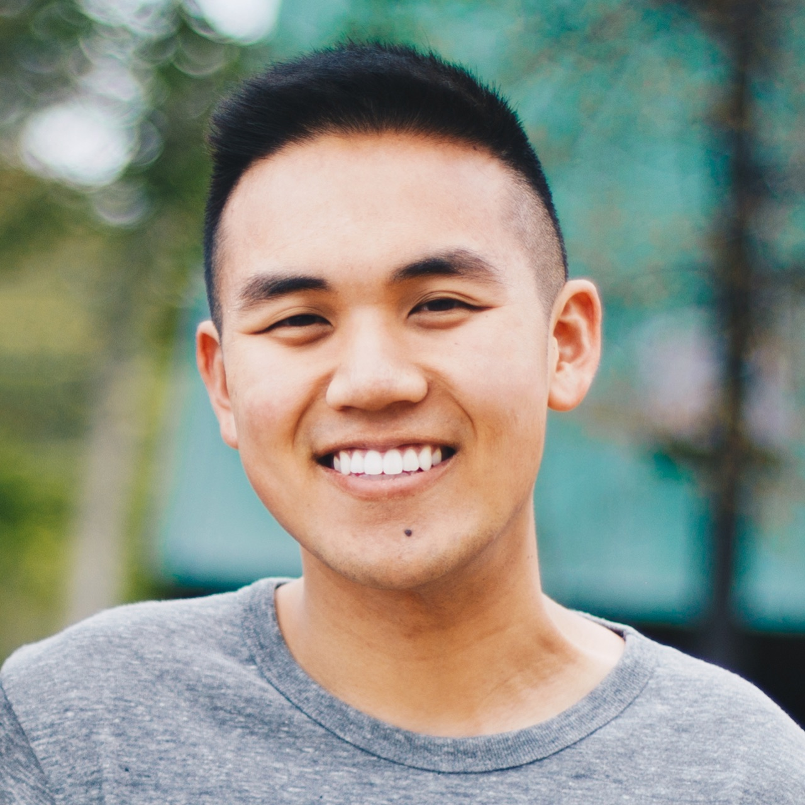

Hey there, I'm Winston.
I'm a Bay Area native and Cal alum currently residing in Pittsburgh, PA working as a UI Engineer at American Eagle.
Outside of work, I mentor college students for MakeNew, a Christian fellowship at Pitt. I also take photos ocassionally, enjoy cooking easy recipes, and like to sing along with my mediocre guitar playing.